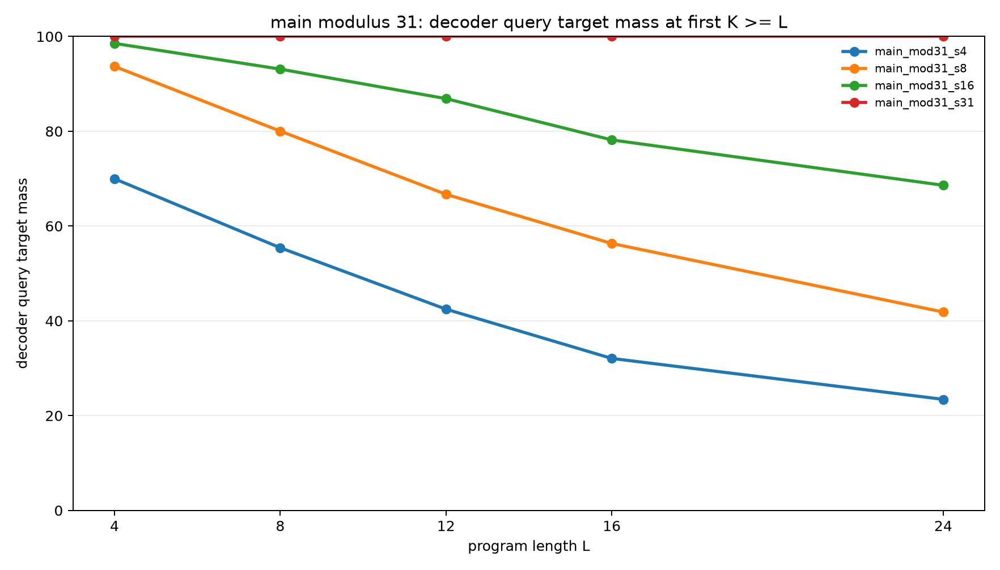
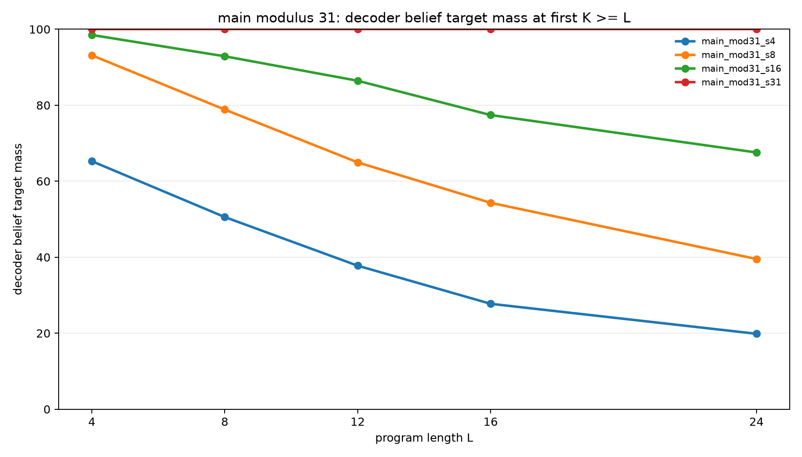
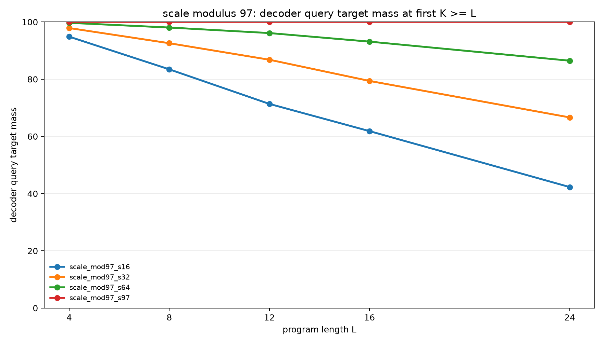
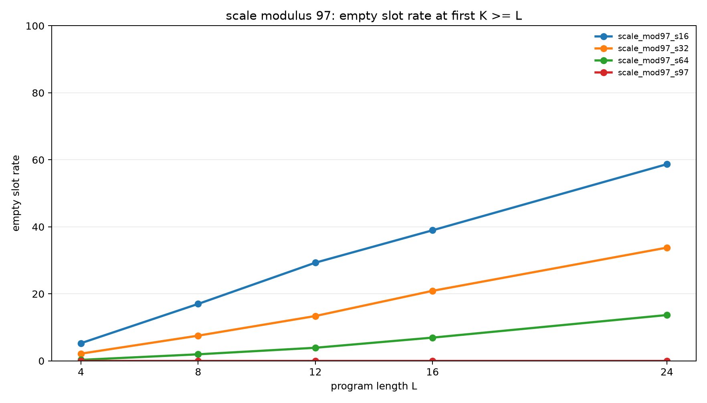

Sparse Support Memory Enables Exact Modular Belief Execution
Abstract
This experiment tests whether modular belief-state execution requires an explicit support representation. Programs transform two hidden registers, A and B, under modular arithmetic and observation filters. The runtime state is a bounded sparse memory of weighted candidate (A,B) pairs.
When the slot budget equals the initial support size, S=p, the executor solves every tested program exactly once the recurrent budget reaches the program length. When S<p, performance degrades in proportion to lost support, and the failure is directly visible through the empty-slot rate.
The main result is a sharp capacity threshold: at modulus 31, S=31 reaches 100.0% query mass and 100.0% belief mass through length 24; S=16 reaches 68.6% query mass and 67.6% belief mass at length 24. At modulus 97, S=97 is exact, while S=64 reaches 86.5% query mass and 86.3% belief mass at length 24.
Task
Each example starts from the hidden relation:
B = A + d (mod p), with A unknownThe initial belief contains exactly p possible (A,B) states. Programs contain arithmetic updates and observation filters of the form A % m = r or B % m = r. Observation residues are sampled from the current support, so the target belief is never empty. The final query asks for one distribution over A, B, A+B mod p, or A-B mod p.
Executor
The executor keeps S weighted support slots. Each active slot stores one concrete (A,B) pair. Arithmetic operations update every active slot exactly. Observation filters delete slots that violate the observed residue. The output belief is the normalized distribution represented by the active slots.
If S>=p, initialization stores all initial support states. If S<p, initialization stores a deterministic stride subset of the initial support. When all represented slots are deleted by later observations, the executor falls back to a uniform pair distribution and records an empty_slot_rate event.
Protocol
| Phase | Modulus | Slot capacities | Lengths | Examples per query type |
|---|---|---|---|---|
| Smoke | 7 | 2, 4, 7 | 2, 3 | 64 |
| Pilot | 11 | 4, 8, 11 | 3, 6, 9, 12 | 512 |
| Main | 31 | 4, 8, 16, 31 | 4, 8, 12, 16, 24 | 512 |
| Scale | 97 | 16, 32, 64, 97 | 4, 8, 12, 16, 24 | 256 |
For each length L, the executor is evaluated at several recurrent budgets K. The headline rows report the first K such that K>=L.
Main Results
At modulus 31, exact execution appears exactly at S=p.
| Slot capacity | L=4 query | L=8 query | L=12 query | L=16 query | L=24 query | L=24 empty |
|---|---|---|---|---|---|---|
| 4 | 70.0% | 55.4% | 42.5% | 32.1% | 23.4% | 80.3% |
| 8 | 93.7% | 80.0% | 66.7% | 56.3% | 41.9% | 60.5% |
| 16 | 98.5% | 93.1% | 86.9% | 78.2% | 68.6% | 32.5% |
| 31 | 100.0% | 100.0% | 100.0% | 100.0% | 100.0% | 0.0% |
| Slot capacity | L=4 belief | L=8 belief | L=12 belief | L=16 belief | L=24 belief |
|---|---|---|---|---|---|
| 4 | 65.3% | 50.6% | 37.8% | 27.7% | 19.9% |
| 8 | 93.1% | 78.9% | 65.0% | 54.3% | 39.5% |
| 16 | 98.5% | 92.9% | 86.4% | 77.4% | 67.6% |
| 31 | 100.0% | 100.0% | 100.0% | 100.0% | 100.0% |


Scale Results
The same capacity threshold appears at modulus 97.
| Slot capacity | L=4 query | L=8 query | L=12 query | L=16 query | L=24 query | L=24 empty |
|---|---|---|---|---|---|---|
| 16 | 94.9% | 83.5% | 71.4% | 61.8% | 42.3% | 58.7% |
| 32 | 97.9% | 92.6% | 86.8% | 79.4% | 66.6% | 33.8% |
| 64 | 99.7% | 98.1% | 96.1% | 93.1% | 86.5% | 13.7% |
| 97 | 100.0% | 100.0% | 100.0% | 100.0% | 100.0% | 0.0% |
| Slot capacity | L=4 belief | L=8 belief | L=12 belief | L=16 belief | L=24 belief |
|---|---|---|---|---|---|
| 16 | 94.7% | 83.0% | 70.7% | 61.0% | 41.3% |
| 32 | 97.9% | 92.5% | 86.6% | 79.1% | 66.2% |
| 64 | 99.7% | 98.0% | 96.1% | 93.1% | 86.3% |
| 97 | 100.0% | 100.0% | 100.0% | 100.0% | 100.0% |


Interpretation
The task is exactly solvable with a compact structured state: one slot per initial support element. The arithmetic operations are bijections over the support, so they do not increase the number of represented states. Observation filters only remove states. Therefore a memory with S=p slots can preserve the exact belief distribution indefinitely under this program family.
Sub-capacity memories fail for a concrete reason. They do not store the whole initial relation, so later observations can delete every represented slot even when the true target support is nonempty. The empty-slot rate grows with length and predicts the drop in both query mass and belief mass.
The result supports a precise design claim: for this class of symbolic latent execution tasks, the critical missing state is not a larger dense vector by itself. The executor needs an addressable support representation whose capacity matches the number of live hypotheses that the program may need to preserve.
Limitations
This executor is not a learned neural model. The arithmetic and observation updates are hand-coded, and initialization is deterministic. The experiment therefore isolates representational sufficiency, not learnability.
The program family also has a bounded-support property: support never grows above the initial p states. A different task with branching uncertainty would need a larger or dynamically allocated memory.
Reproducibility
Run files are in experiments/sparse_support_memory_executor/runs/. Aggregated analysis files are in experiments/sparse_support_memory_executor/analysis/. No model checkpoints are required for this sweep.
PYTHONDONTWRITEBYTECODE=1 python experiments/sparse_support_memory_executor/src/analyze_sparse_support_memory.py